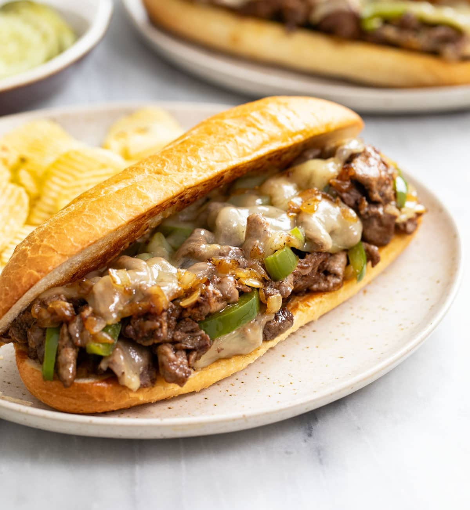

Home
Cheesesteak

Description
This recipe will take you all the way back to Philly.
This famous Philly Cheesesteak recipe will be sure to impress!
Ingredients
- 1 ½ lbs Ribeye or Top Sirloin steak, trimmed of excess fat
- 1 large Yellow onion, thinly sliced
- 1 Green bell pepper, thinly sliced (optional)
- 8 slices Provolone cheese (or American cheese)
- 4 Hoagie rolls
- 2 tbsp Vegetable or olive oil, divided
- 2 tbsp Butter, softened
- Salt and freshly ground black pepper, to taste
Steps
- Freeze the meat: Place the steak in the freezer for 30 to 45 minutes. This firms up the meat and makes it significantly easier to slice into paper-thin strips.
- Sauté the vegetables: Heat 1 tablespoon of oil in a large skillet over medium-high heat. Add the onions and bell peppers. Cook for 5 to 8 minutes until softened and slightly caramelized, then transfer them to a plate and set aside.
- Toast the rolls: Split the hoagie rolls, spread the insides with softened butter, and toast them face-down in the skillet or a separate pan for 2 minutes until golden brown. Set aside.
- Sear the steak: Turn the skillet up to high heat and add the remaining tablespoon of oil. Add the thinly sliced steak in a flat layer. Season generously with salt and pepper. Let it sear undisturbed for 2 minutes to get a nice brown crust, then flip and break it apart with a spatula until fully cooked (about 1-2 more minutes).
- Combine and melt: Toss the cooked vegetables back into the skillet with the meat. Divide the mixture into 4 equal piles roughly the length of your hoagie rolls. Top each pile with 2 slices of Provolone cheese. Turn off the heat, cover the pan with a lid, and let it sit for 1 minute until the cheese is completely melted and gooey.
- Assemble: Open a toasted roll and place it face-down directly over one of the cheesy steak piles. Slide a sturdy spatula underneath the meat and expertly flip the entire sandwich over. Repeat for the remaining rolls and serve hot!